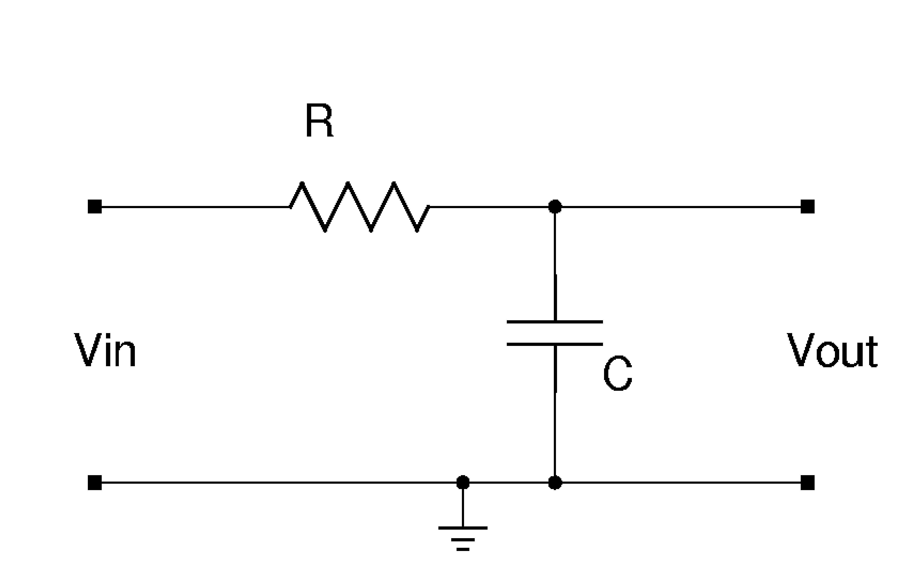

Transient Response
BME253L - Fall 2025 - Palmeri
Objectives
Time constant for first-order circuits.
Resonant and natural frequencies of an RLC circuit.
Explore the behavior of an LC resonant circuit.
Background
A time constant is the amount of time required for an exponential decay (or rise) to reach approximately 63.2% of its final value.
For first-order circuits, the time constant, \(\tau\), is \(RC\) for RC series circuits, or \(\frac{L}{R}\) for RL series circuits.
In addition to RC/RL first-order systems, RLC circuits are second-order systems that are described using additional parameters. The governing equations for any linear second-order system:
\[ a_2 \frac{d^2x(t)}{dt^2} + a_1 \frac{dx(t)}{dt} + a_0x(t) = b_0f(t) \]
\[ \frac{1}{\omega^{2}_{n}} \frac{d^2x(t)}{dt^2} + \frac{2\zeta}{\omega_n} \frac{dx(t)}{dt} + x(t) = K_Sf(t) \]
The function \(x(t)\) is a general, time-varying function that can be used to model any time-varying parameter measured in the system.
The following constants can be determined which hold true for all linear, second-order systems:
Resonant Frequency (radians/seconds)
\[ \omega_n = \sqrt{\frac{a_0}{a_2}} \]
Damping Ratio
\[ \zeta = \left(\frac{a_1}{2} \right)\sqrt{\frac{1}{a_0a_2}} \]
Static Sensitivity
\[ K_S = \frac{b_0}{a_0} \]
For the purposes of this experiment, we are concerned with the following constants and parameters which pertain specifically to series RLC circuits.
Note that the resonant frequency is the same for both a series and parallel RLC circuit, but the damping ratio is different. One should always derive the governing differential equations to evaluate these parameters.
Resonant Frequency (radians/second)
\[ \omega_n = \frac{1}{\sqrt{LC}} \]
Damping Ratio
\[ \zeta = RC\frac{\omega_n}{2} = \frac{R}{2}\sqrt{\frac{C}{L}} \]
Quality Factor
\[ Q = \frac{1}{2\zeta} \]
Bandwidth (radians/second)
\[ B = \frac{\omega_n}{Q} = \omega_n 2 \zeta \]
Damped Responses
Three different types of responses from an RLC circuit are possible depending on the relationship between R, L, and C and can be characterized by a system’s damping ratio:
| Response Type | Damping Ratio |
|---|---|
| Underdamped or Oscillatory | \(\zeta < 1\) |
| Critically Damped | \(\zeta = 1\) |
| Overdamped | \(\zeta > 1\) |
The frequency of the oscillation is known as the damped natural frequency and is given by:
\[ \omega_d = \omega_n \sqrt{1 - \zeta ^2} \]
Unlike the previous labs, please prepare a Jupyter notebook and render a final PDF for all of the parts of this lab and submit that PDF to the associated Gradescope assignment.
The RC Low Pass Filter

For the circuit above, calculate the time constant if
- R = 100 Ω and C = 100 nF and
- R = 3.3 kΩ and C = 470 nF.
How does this circuit filter signals at frequencies of 100 Hz, 10 kHz, 100 kHz?
Create a KiCad SPICE simulation of the circuit above with R = 1.0 kΩ and C = 220 nF. Apply a 10 \(V_{pp}\) square wave at a frequency acceptable for measuring the time constant of the circuit.
At an “acceptable frequency”, the top and bottom of the output wave will reach steady state. Remember that after five time constants, a signal will have decayed by over 99%.
Estimate the time constant for this combination of R and C from your SPICE simulation.
How closely does does the measured time constant match the theoretical time constant? Explain any discrepancy.
Discuss how the circuit filters signals at different frequencies and the difference between the input and output waveforms for frequencies clearly in the passband and the stopband. Support your discussion with representative waveforms from your SPICE simulation.
Repeat (a-c) with R = 33 kΩ and C = 470 nF.
- Create a modified KiCad SPICE simulation using a sinusoidal input, and generate plots of input and output waveforms at 1 kHz, 10 kHz, and 20 kHz for each set of R and C, with each input/output pair on the same axes.
This will yield six separate graphs. Note the relationship between the circuit’s frequency response and its time constant.
The RL High Pass Filter
For the circuit above, find the time constant if R = 10 kΩ and L = 47 mH.
How does this circuit filter signals at 100 Hz, 10 kHz, 100 kHz?
Create a KiCad SPICE simulation for the circuit above with R = 10 kΩ and L = 10 mH. Apply a 10 \(V_{pp}\) square wave at a frequency appropriate for measuring the time constant of the circuit.
Estimate the time constant for this combination of R and L from your SPICE simulation.
How closely does the measured time constant match the theoretical time constant? Explain any discrepancy.
Discuss how the circuit filters signals at different frequencies and the difference between the input and output waveforms for frequencies clearly in the passband and the stopband. Support your discussion with representative waveforms from your SPICE simulation.
- Create a modified KiCad SPICE simulation for sinusoidal inputs at 1 kHz and 10 kHz and show the resultant output signals.
The Series RLC circuit
For the circuit above, if R = 330 Ω, C = 22 nF and L = 10 mH, what is:
the resonant frequency,
the damping constant, and
the quality factor if ?
Is the circuit damped or underdamped?
Find the value of R that will give a critically damped response.
Simulate the circuit with a 2 \(V_{pp}\) sinusoidal wave.
Sweep the input frequency to find the resonant frequency and capture this response.
Switch the input to a square wave and determine the damped natural frequency. Compare the measured damped natural frequency to its theoretical value. Compare the damped natural frequency to the resonant frequency.
Leave the input a square wave. Replace the 330 Ω resistor with one that gives a critically-damped response. (Hint - you might do with by sweeping a component value.) Show the simulation output capturing the input and output waveforms for this critically-damped response for this optimized resistor value.
Replace the resistor in your simulation with one that gives an over-damped response. Record the resistor value used and generate a simulation output image showing the input and output waveforms.
The LC Circuit
Remove the resistor and modify the circuit as shown above. Set the input to be a sinusoid at the resonant frequency and measure the output of the circuit.
Can the amplitude of the output voltage exceed the amplitude of the input voltage?